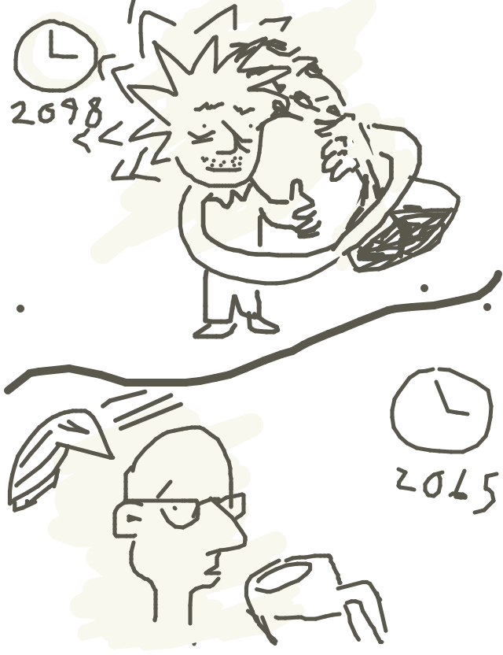
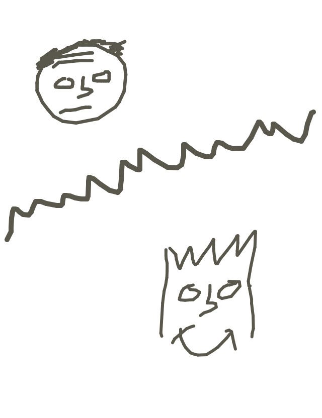
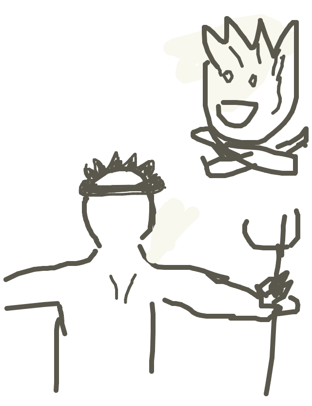

so loganroos drew...

so rickyc wrote...
In the year 2098, Einstein was finally able to discover the secret to hair growth. Researchers discovered that beer caused hair lost in 2065.
so tag drew...
so matt wrote...
In the year 2065, men were still suffering from shoddy toupees. Now, 33 years later, science has given us the ability to grow our scalps like Bart Simpson.
so mike drew...
so jackcheng wrote...
Try as he might, old man Poseidon couldn't wipe the shit-eating grin off the face of the young campfire.
so jason drew...
so irondavy wrote...
Poseidon. Sentient camp fire. Nature's oldest enemies clashing once again for domain of the beach sands.